| 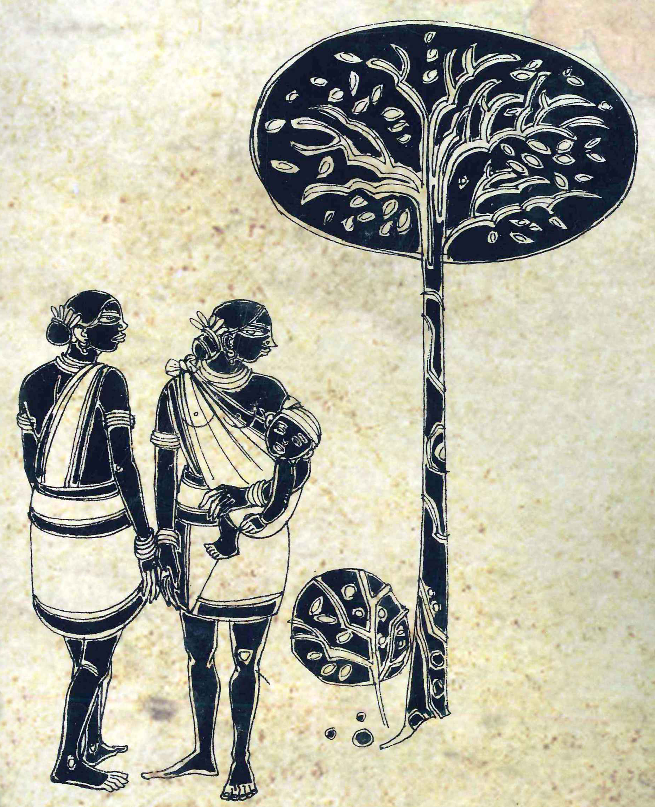 | Bibliography of South Asian Titles 2016 October Worldcat lists these titles at https://www.worldcat.org/profiles/uvalibrary/lists/3690578 |
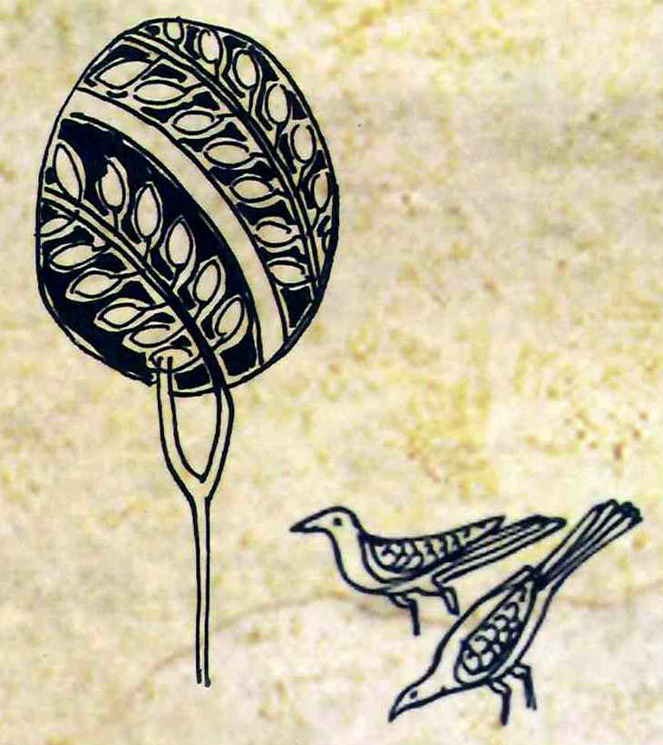 |
| 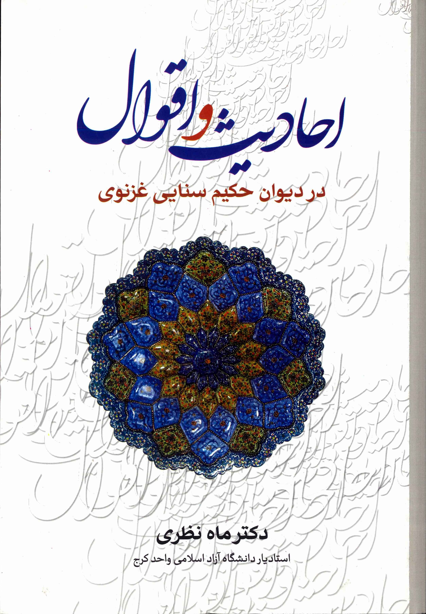 | 1. Ahadis va aqval dar divan-i hakim Sanayi Ghaznavi. Nazari, Mah, Sanai al-Ghaznavi,Abu al-Majd Majdud ibn Adam. 2015. Persian poetry -- 747-1500 -- History and criticism. Criticism and interpretation. http://www.worldcat.org/oclc/920562007 |
| 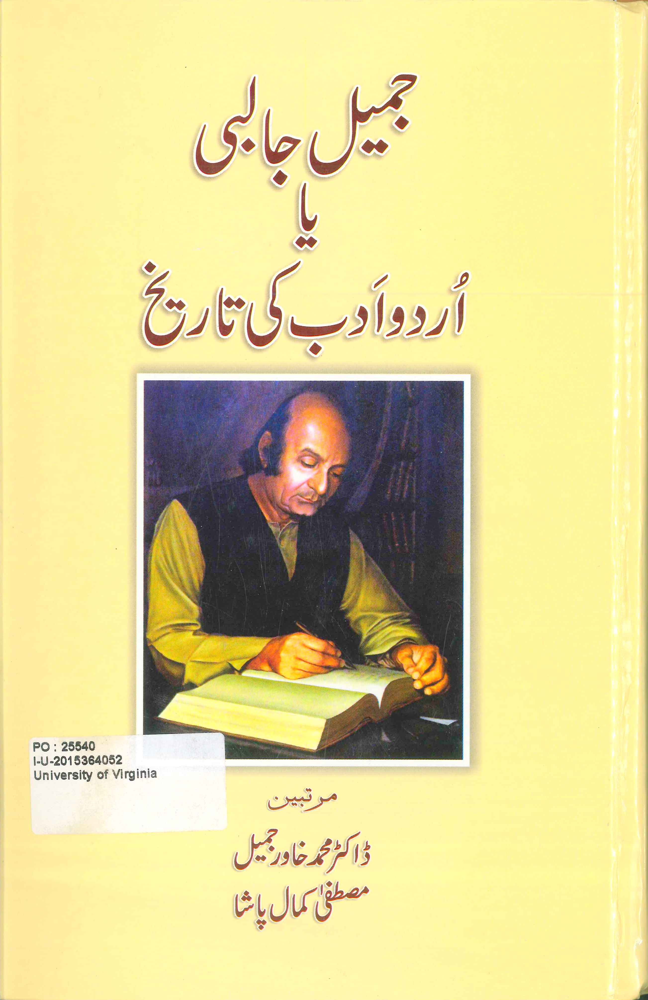 | 2. Jamil Jalibi ya Urdu adab ki tarikh = Jameel Jalibi ya Urdu adab ki tareekh. Jamil, Khavar, Pasha,Mustafa Kamal. 2015. Study on contribution of Jamil Jalibi, born 1928, Urdu scholar and critic in writing of Urdu literature history. Urdu literature -- History and criticism. http://www.worldcat.org/oclc/932337739 |
| 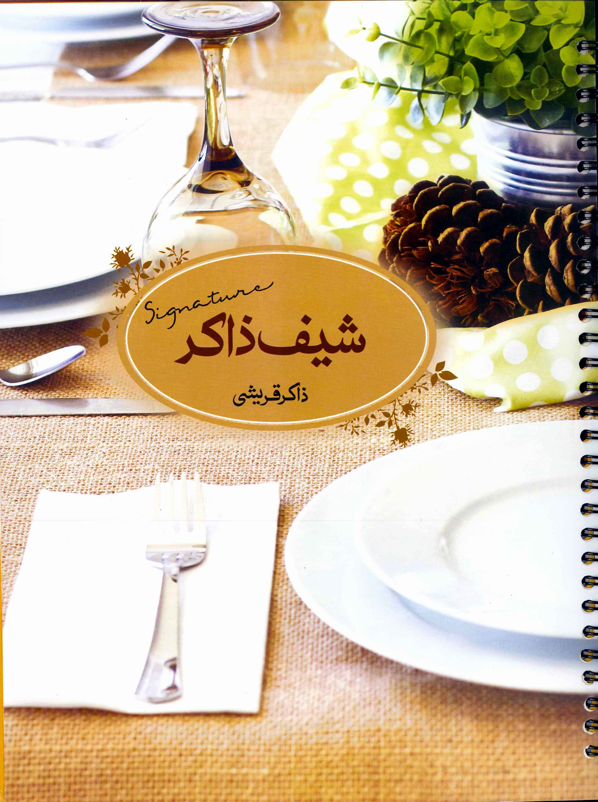 | 3. Shef Zakir signature. Quraishi, Zakir. 2014. Recipes of Pakistani cuisine. Cooking, Pakistani.
http://www.worldcat.org/oclc/945885191 |
| 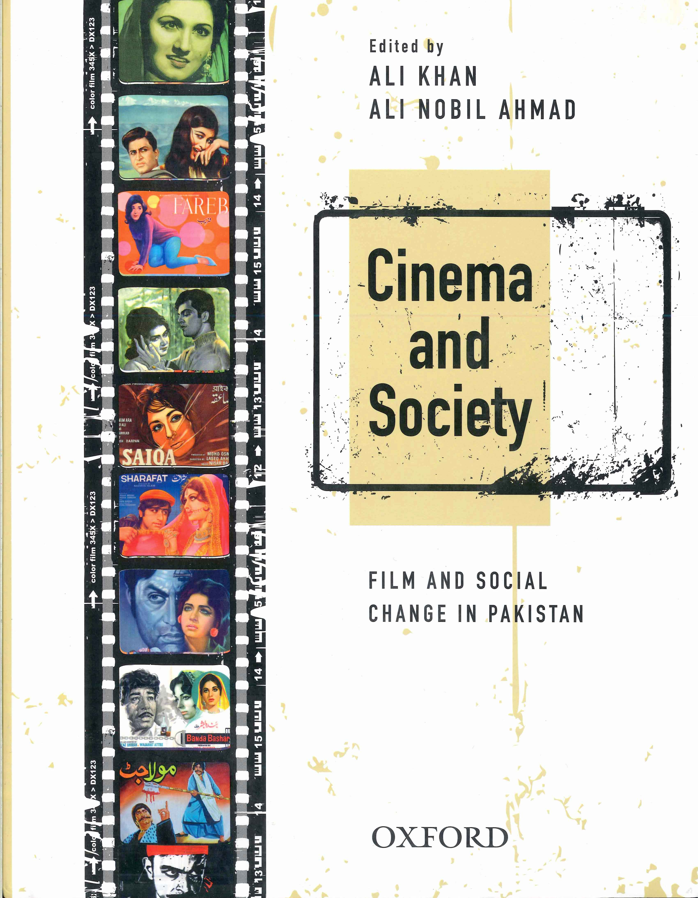 | 4. Cinema and society : film and social change in Pakistan. Khan, Ali, Ahmad,Ali Nobil. 2016. Motion pictures -- Pakistan -- History. Social aspects -- Pakistan. http://www.worldcat.org/oclc/945804424 |
| 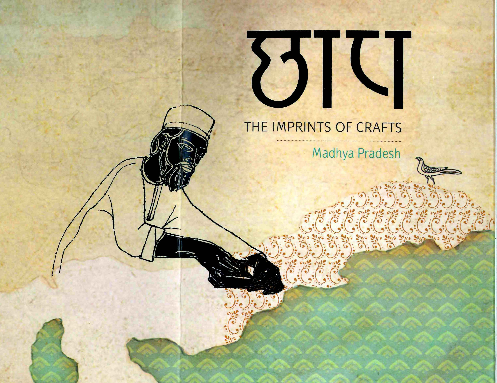 | 5. Chapa : the imprints of crafts : Madhya Pradesh. Seth, Devika, Gaatha Handicrafts (Ahamadabad, India), Madhya Pradesh Hastashilp evam Hathkargha Vikas Nigam Ltd. 2013. On the handicrafts of Madhya Pradesh, India. http://www.worldcat.org/oclc/945194042 |
| 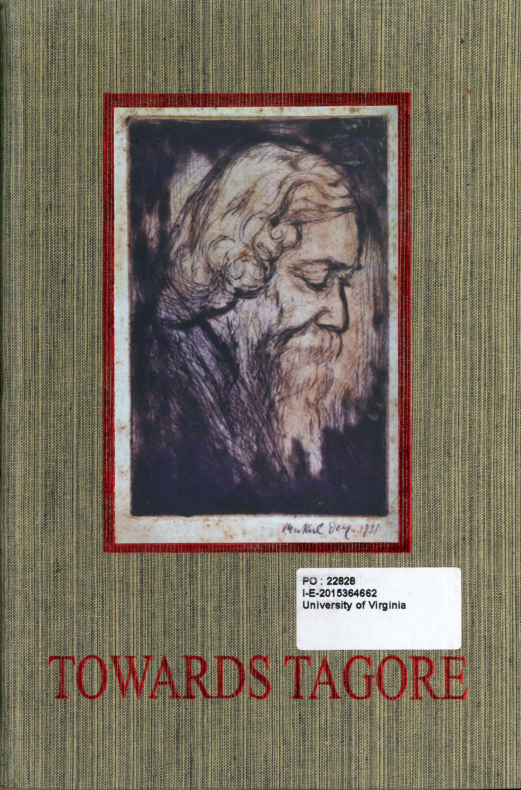 | 6. Towards Tagore. Dasgupta, Sanjukta, Mukhopadhyaya, Ramakumara, Ganguly, Swati, Visva-Bharati. 2014. Criticism, interpretation http://www.worldcat.org/oclc/904592098 |
| 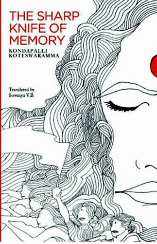 | 7. The sharp knife of memory : a memoir. Kotesvaramma, Kondapalli. 2015. Memoir of a woman communist leader from Andhra Pradesh and wife of Kondapalli Sitaramayya, communist leader. http://www.worldcat.org/oclc/921367615 |
| 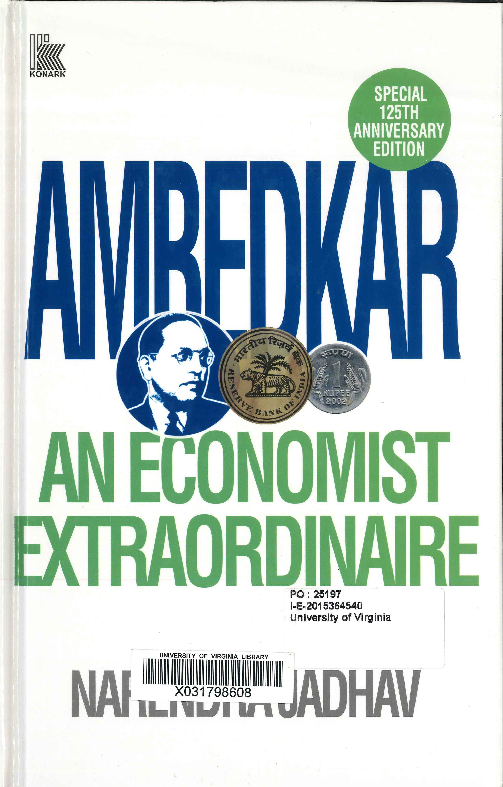 | 8. Ambedkar : an economist extraordinaire. Jadhav, Narendra. 2015. Political and social views. http://www.worldcat.org/oclc/927294462 |
| 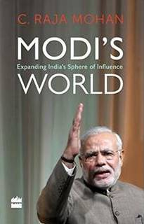 | 9. Modi's world : expanding India's sphere of influence. Raja Mohan, C. 2015. Modi, Narendra, -- 1950- -- Political and social views. http://www.worldcat.org/oclc/913802426 |
| 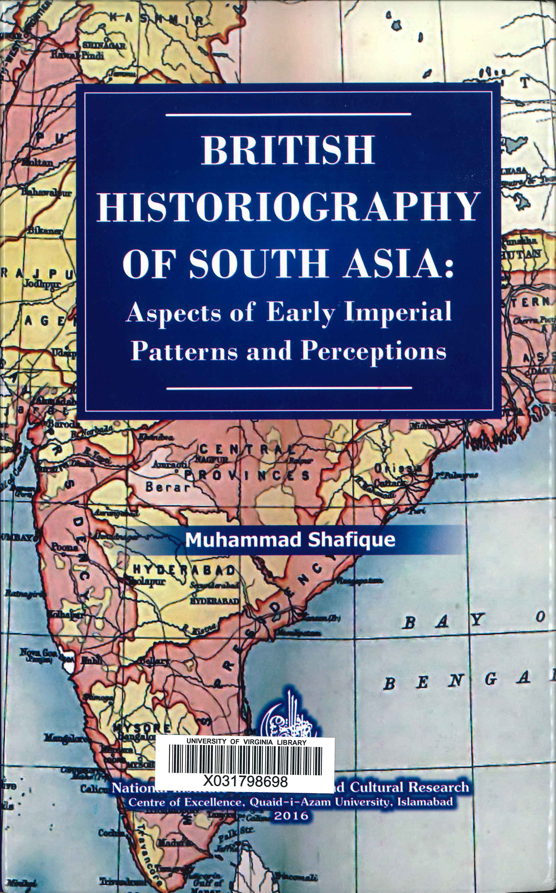 | 10. British historiography of South Asia : aspects of early Imperial patterns and perceptions. Shafique, Muhammad,National Institute of Historical and Cultural Research (Pakistan), 2016. http://www.worldcat.org/oclc/951557652 |
| 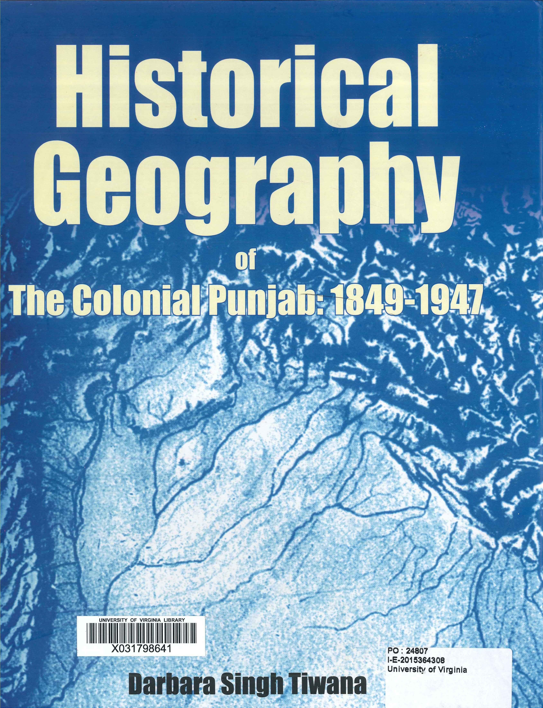 | 11. Historical geography of the colonial Punjab : 1849-1947. Tiwana,Darbara Singh. 2015. http://www.worldcat.org/oclc/924660470 |
| 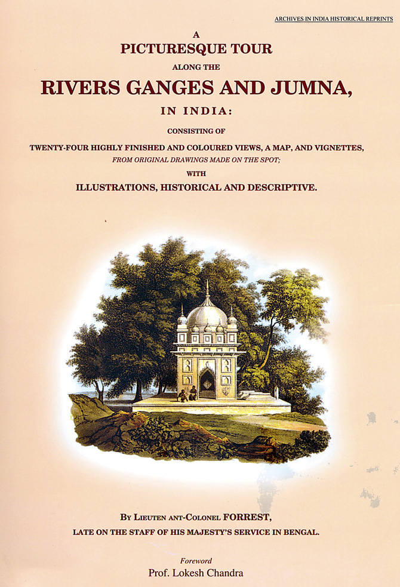 | 12. A picturesque tour along the rivers Ganges and Jumna in India : consisting of twenty-four highly finished and coloured views, a map, and vignettes, from original drawings made on the spot ; with illustrations, historical, and descriptive. Forrest, Charles Ramus, National Archives of India. 2015. http://www.worldcat.org/oclc/908635124 |
| 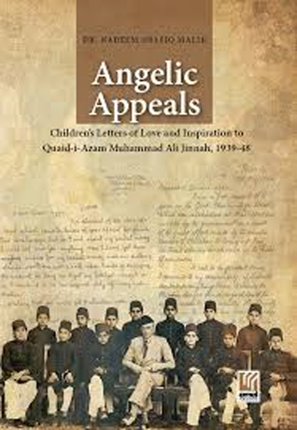 | 13. Angelic appeals : children's letters of love and inspiration to Quaid-i-Azam Muhammad Ali Jinnah, 1939-1848. Malik,Nadeem Shafiq. 2015. Children -- Charitable contributions -- Pakistan -- Correspondence. http://www.worldcat.org/oclc/946142850 |
| 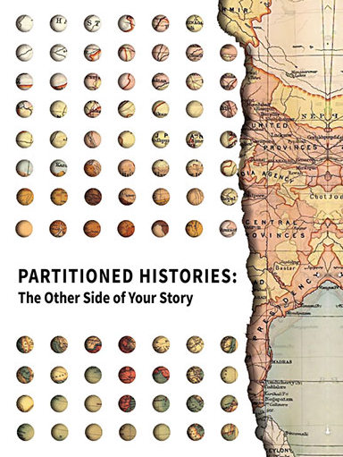 | 14. Partitioned histories : the other side of your story. Sachdeva, Arjun, Patel, Sanaya, Hameed, Alizeh, Raja, Noorzadeh,Hidayatullah, Haris. 2016. Bengal (India) -- History -- Partition, 1905 and 1947. http://www.worldcat.org/oclc/951612401 |
| 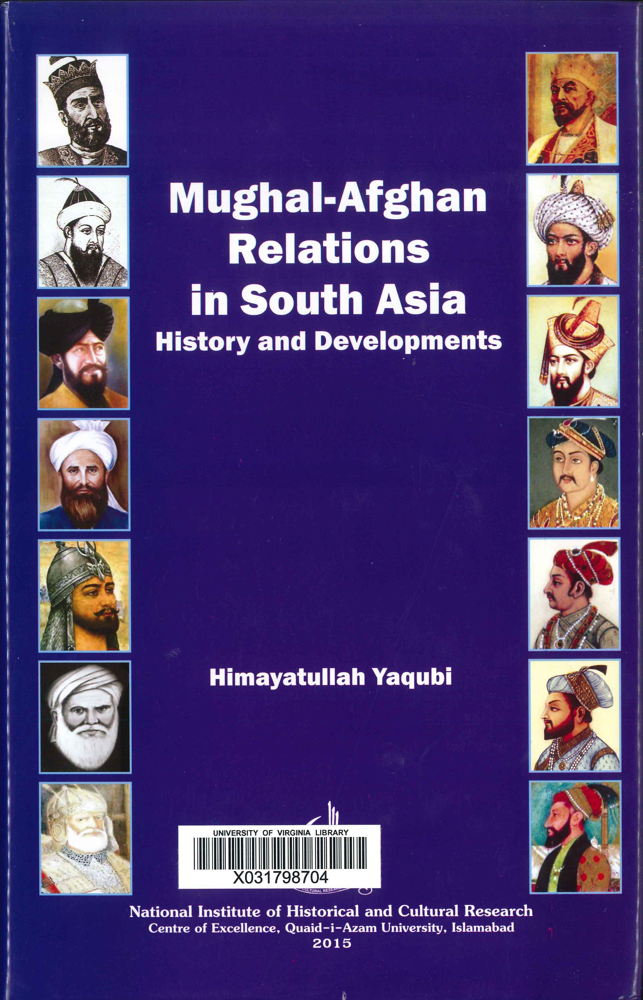 | 15. Mughal-Afghan relations in South Asia : history and developments. Yaqubi, Himayatullah, National Institute of Historical and Cultural Research (Pakistan). 2015. Mogul Empire -- Politics and government. http://www.worldcat.org/oclc/956583854 |
| 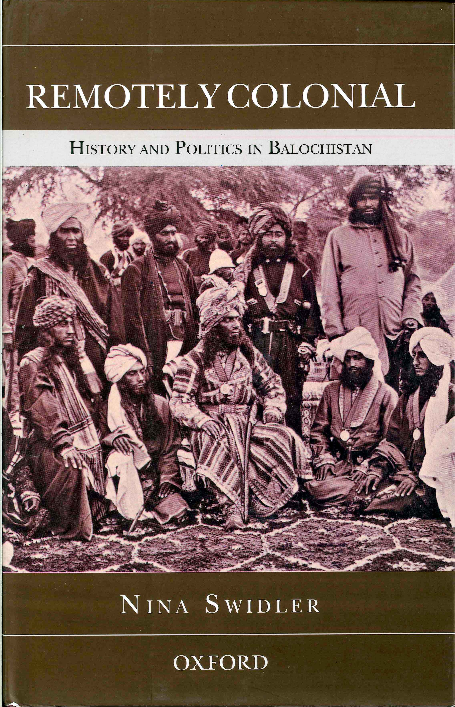 | 16. Remotely colonial : history and politics in Balochistan. Swidler, Nina. 2014. Kalat District (Pakistan) -- History. Great Britain -- Foreign relations -- 19th century. http://www.worldcat.org/oclc/893189738 |
| 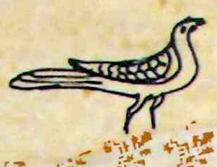 | |
| 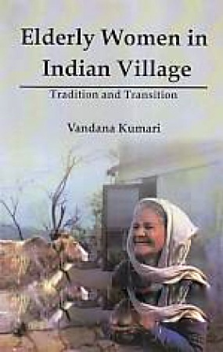 | 17. Elderly women in Indian village : tradition and transition. Vandana Kumari. 2015. Older and Rural women -- India -- Satwasa -- Social conditions. http://www.worldcat.org/oclc/903002288 |
| 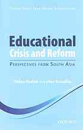 | 18. Educational crisis and reform : perspectives from South Asia. Rashid, Abbas, Muzaffar, Irfan. South Asian Free Media Association. 2015. Educational change -- South Asia. http://www.worldcat.org/oclc/914183944 |
| 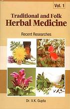 | 19. Traditional and folk herbal medicine : recent researches. V. K. Gupta. New Delhi: Daya Pub. House, 2012. http://www.worldcat.org/oclc/770601300 |
| 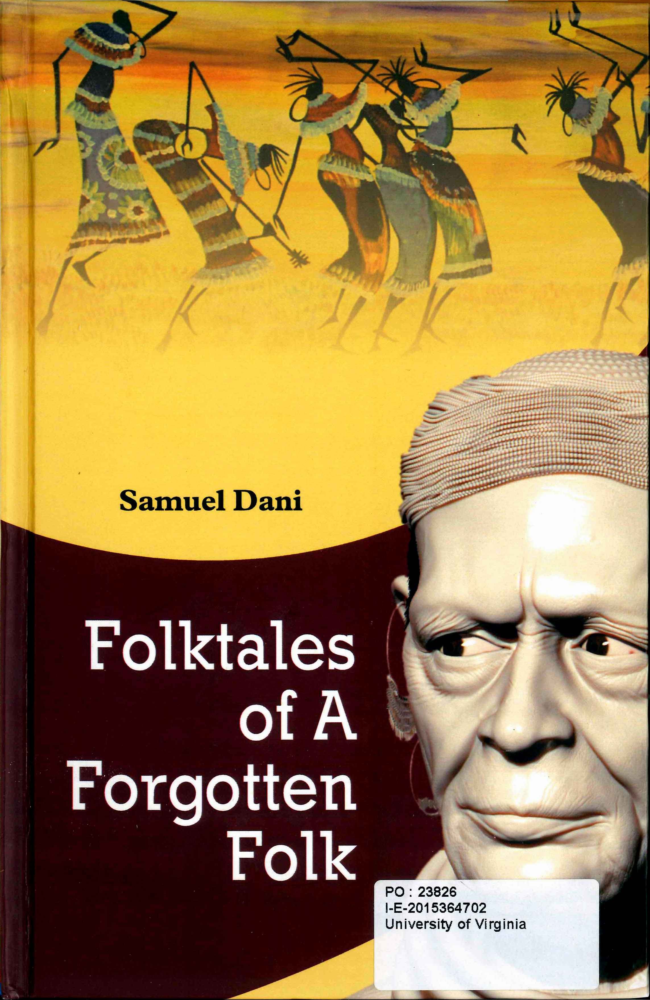 | 20. Folktales of a forgotten folk. Samuel Dani. 2015. Folk tales of Kamar, Indic people, from Odisha, India. Kamar (Indic people) -- India -- Nuapada (District) -- Folklore. http://www.worldcat.org/oclc/930875979 |
| 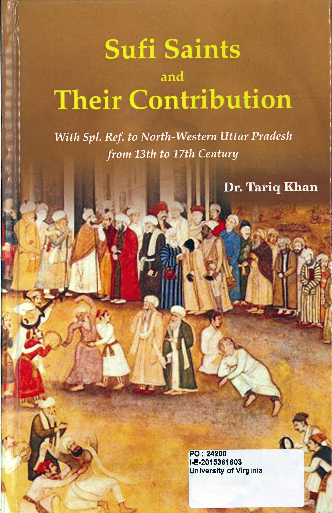 | 21. Sufi saints and their contribution : (with spl.ref. to North-Western Uttar Pradesh from 13th to 17th century). Tariq Khan. . 2015. Chishtiyah -- India -- Uttar Pradesh -- History. http://www.worldcat.org/oclc/922639551 |
| 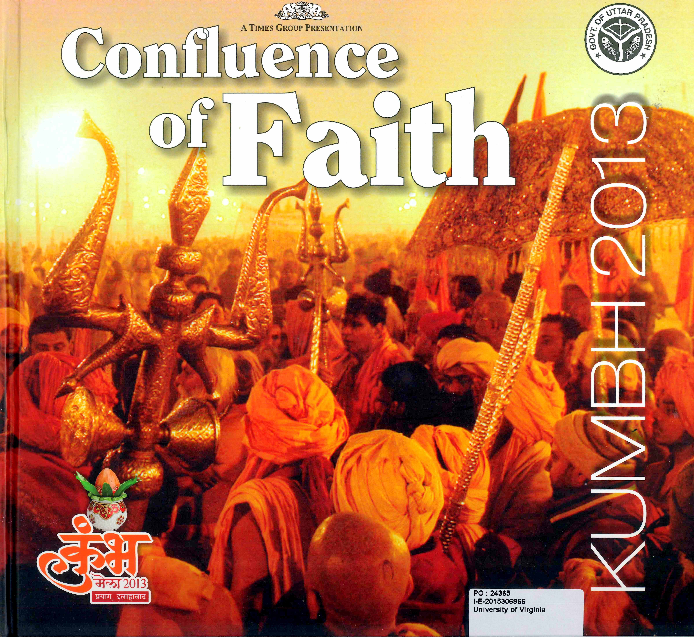 | 22. Confluence of faith : Kumbh 2013 = Kumbha Mela 2013, Prayaga, Ilahabada. Dubey, D. P., Roy, Arindam, Neelabh, Bennett, Coleman & Co. Ltd., Uttar Pradesh (India), Information and Public Relations Department. 2013. Hindu pilgrims and pilgrimages -- India -- Allahabad. http://www.worldcat.org/oclc/909883697 |
| 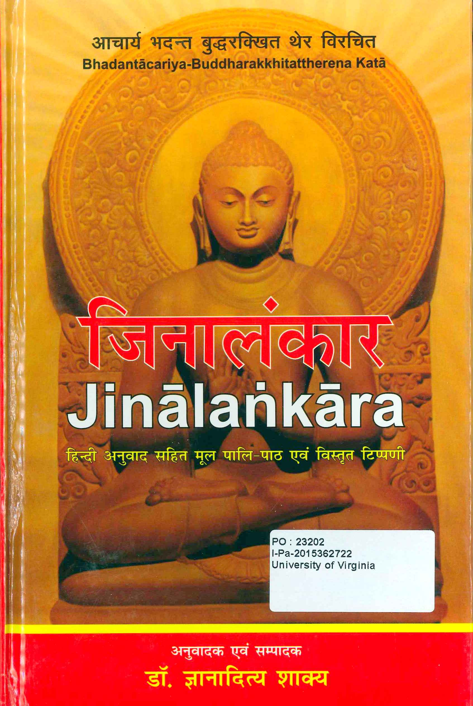 | 23. Jinalankara : Hindi anuvada sahita mula Pali-patha evam vistrta tippani. Buddhadatta, Sakya, Jnanaditya,Buddhadatta., Buddhadatta. 2015. Poem on Gautama Buddha; Pali text with Hindi translation; includes exhaustive introduction. http://www.worldcat.org/oclc/929921672 |
| 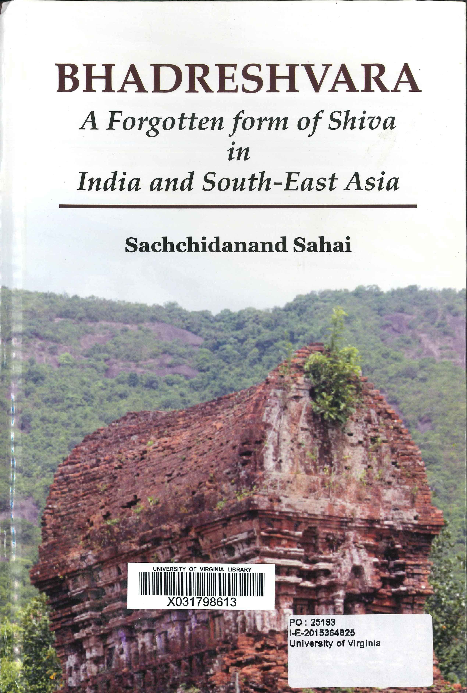 | 24. Bhadreshvara : a forgotten form of Shiva in India and South-East Asia. Sahai, Sachchidanand. 2016. http://www.worldcat.org/oclc/923624453 |
| 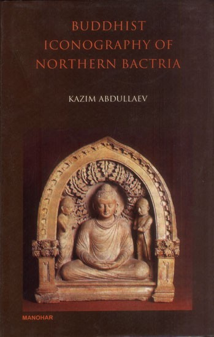 | 25. Buddhist iconography of northern Bactria. Abdullaev, K. A., Betts, Alison, Kidd, Fiona, University of Sydney.,Central Asian Programme. 2015. Buddhist art -- Bactria. http://www.worldcat.org/oclc/908830759 |
| 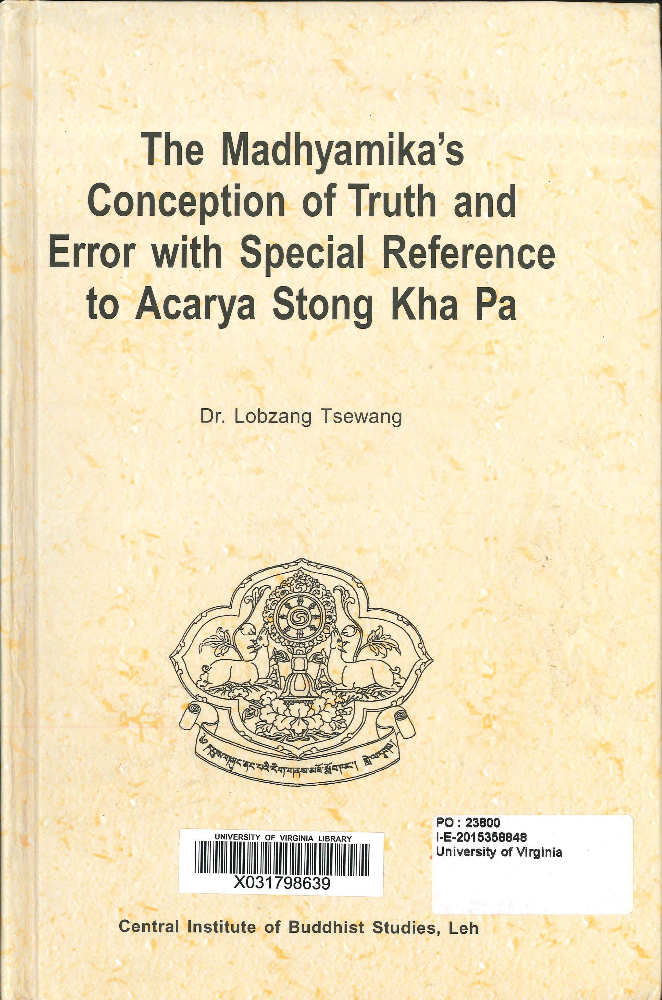 | 26. The Madhyamika's conception of truth and error with special reference to Acarya Stong Kha Pa. Tsewang, Lobzang, Central Institute of Buddhist Studies (Leh, India). 2010. http://www.worldcat.org/oclc/933765801 |
| 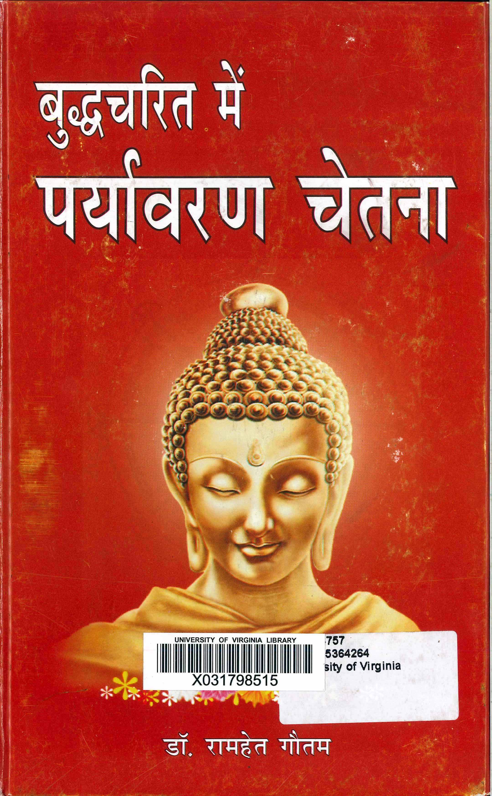 | 27. Buddhacarita mem paryavarana cetana. Gautama, Ramaheta. 2016. Study on ecological awareness in Buddhacarita, poem by Asvaghosa, Buddhist poet and philosopher. http://www.worldcat.org/oclc/932101591 |
| 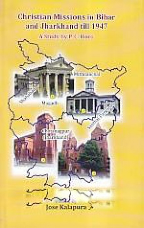 | 28. Christian missions in Bihar and Jharkhand till 1947 : a study by P.C. Horo. Horo, P. C., Kalapura, Jose, Gossner Theological College. 2014. http://www.worldcat.org/oclc/900598587 |
| 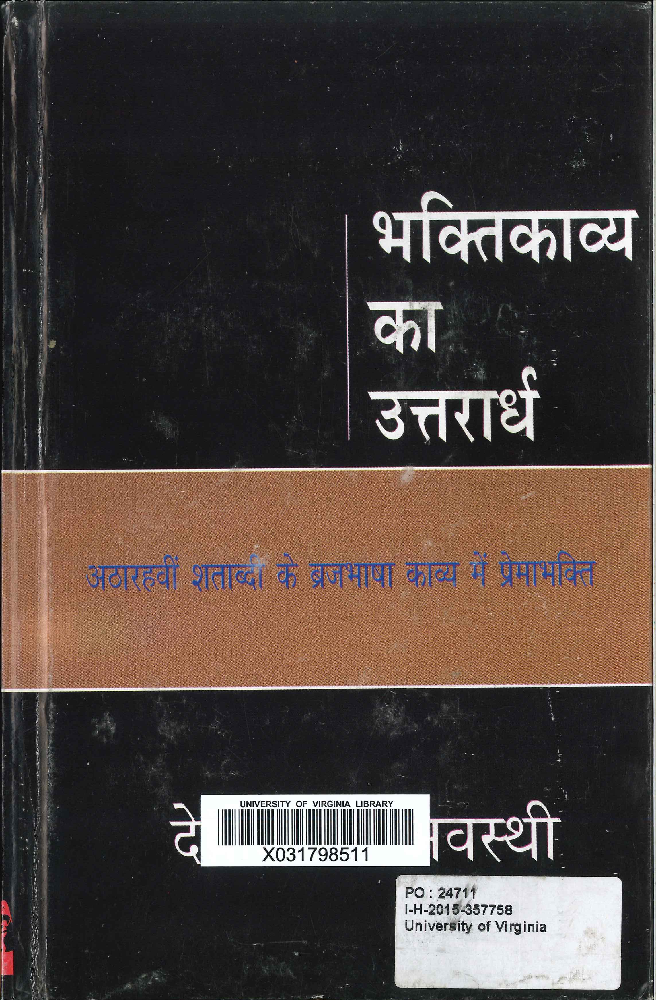 | 29. Bhaktikavya ka uttarardha : (atharahavim satabdi ke Brajabhasha kavya mem premabhakti). Avasthi, Devisankara. 2015. Study of the portrayal of devotional love in the Braj poetry; covers the period 18th century. http://www.worldcat.org/oclc/936234187 |
| 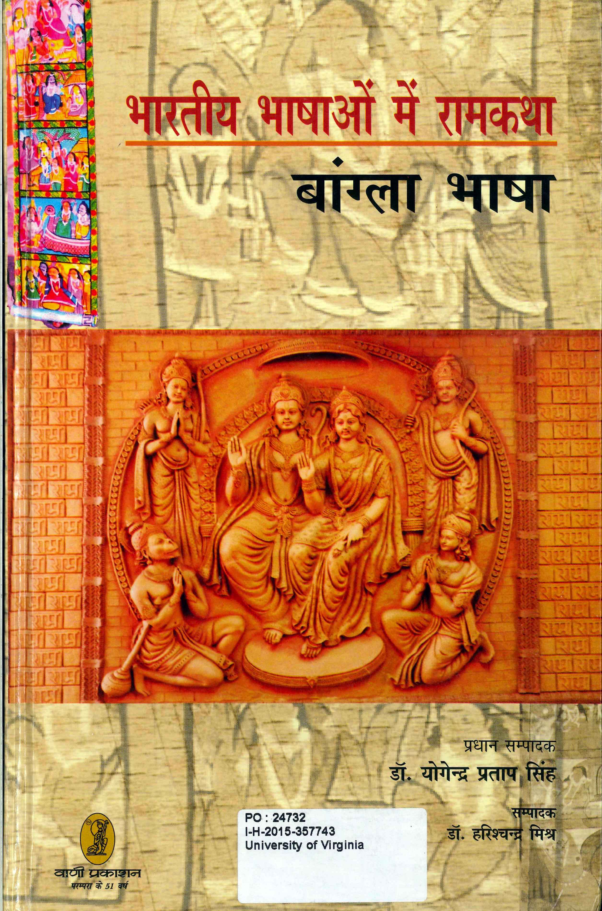 | 30. Bharatiya bhashaom mem Ramakatha : Bangla bhasha. Simha, Yogendra Pratapa, Misra, Hariscandra,Ayodhya Shodh Sansthan. 2015. Contributed articles on the story of Rama, Hindu deity, in Bengali poetry. http://www.worldcat.org/oclc/925510706 |
| 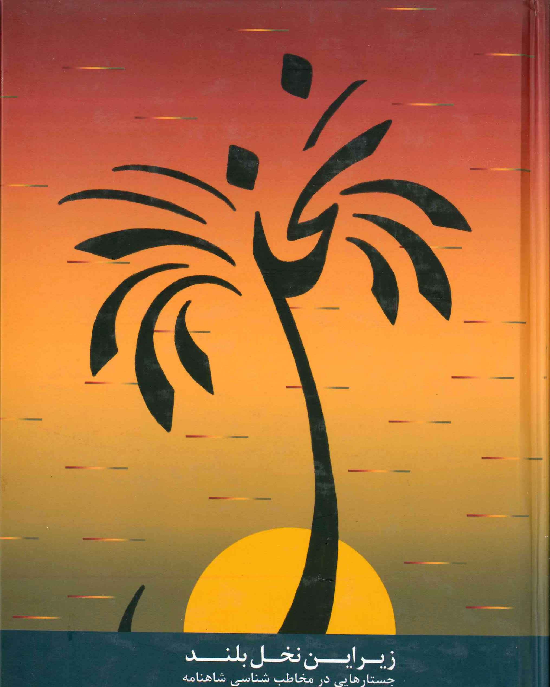 | 31. Zir-i in nakhl-i buland : justarhayi dar mukhatabshinasi-i Shahnamah. Yahaqqi, Muhammad Jafar. 2015. Persian poetry -- 747-1500 -- History and criticism. http://www.worldcat.org/oclc/934100588 |
| 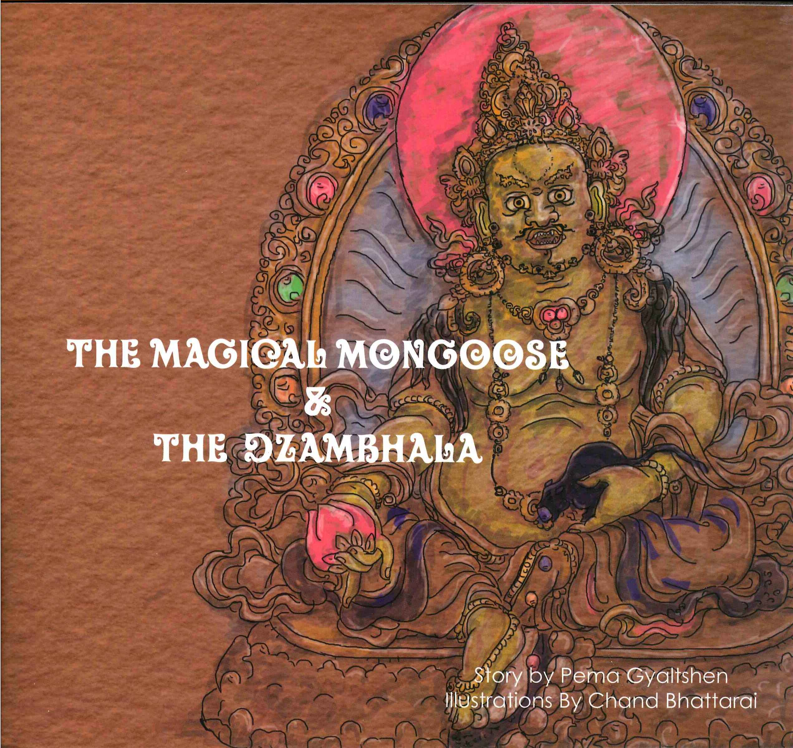 | 32. The magical mongoose & the Dzambhala. Gyaltshen, Pema, Bhattarai,Chand Kumar. 2015. Bhutan - Juvenile audience. http://www.worldcat.org/oclc/910622402 |
| 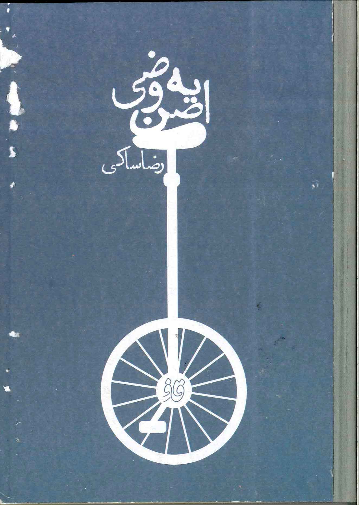 | 33. Asan yih vazi. Saki, Riza, Mahdinizhad, Umid,Hamidi, Mina. 2015. Persian wit and humor. http://www.worldcat.org/oclc/915310009 |
| 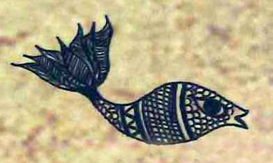 | Click to return to the top of the page |
Philip McEldowney
Last Update -
Tuesday, 11 October 2016 09:53 AM
Count - 32